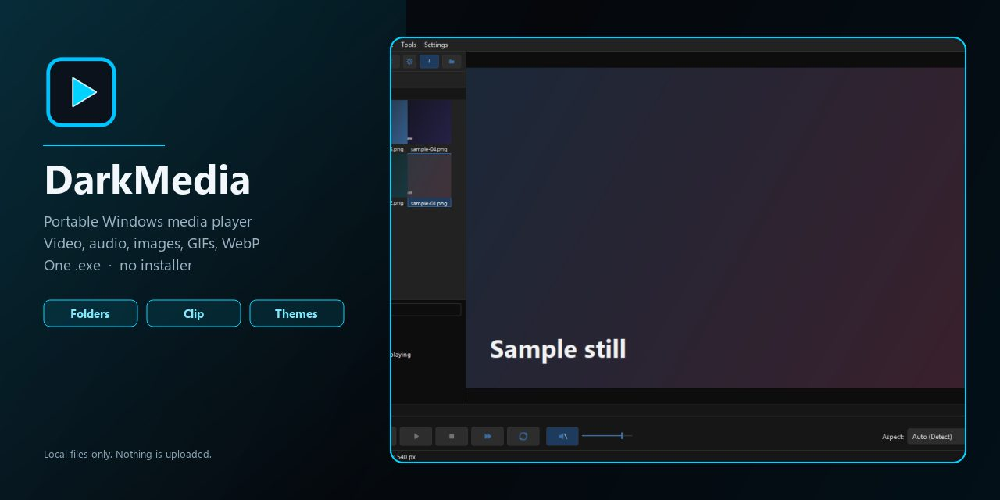

DarkMedia
Portable Windows player for video, audio, images, GIFs, and WebP. One .exe, no installer.

Local files only. Nothing is uploaded.
Portable Windows player for video, audio, images, GIFs, and WebP. One .exe, no installer.

Local files only. Nothing is uploaded.